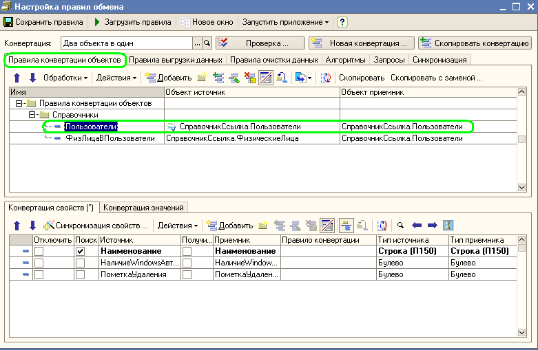
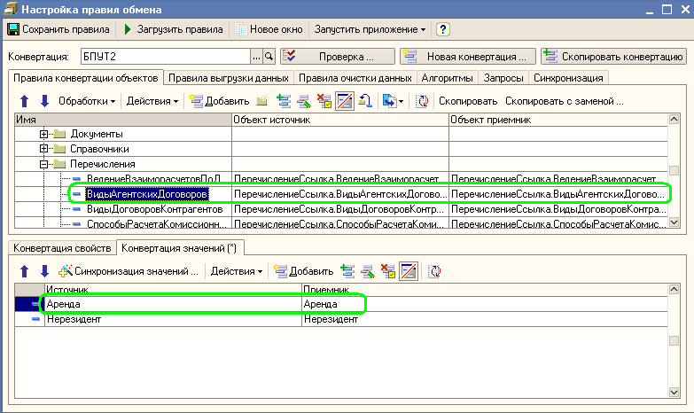

Мы знаем структуру метаданных информационной базы источник и приемника. Этой информации нам вполне достаточно для того, что бы определить какие объекты информационной базы источника должны преобразовываться в какие объекты информационной базы приемника. То есть мы можем установить некоторое соответствие между объектами информационной базы источника и приемника. Например, мы можем задать, что справочнику Номенклатура информационной базы источника соответствует справочник Номенклатура (или какой - либо другой справочник) информационной базы приемника.
Такое соответствие между объектами источника и приемника будем называть "Правила конвертации объектов" или ПКО.

На приведенном примере видно, что для правил обмена (или Конвертации) "Два объекта в один" установлено соответствие объектов для справочников "Пользователи" и "ФизическиеЛица". То есть задано, что объекты справочника "Пользователи" из информационной базы источника нужно переносить в объекты справочника "Пользователи" информационной базы приемника.
Когда соответствие между объектами установлено, можно определить каким образом необходимо переносить реквизиты этих объектов. То есть, нам нужно задать, что реквизиту "Наименование" одного справочника соответствует реквизит "Наименование" другого.
Такое соответствие между свойствами (или реквизитами) объектов источника и приемника будем называть "Правила конвертации свойств" или ПКС.
На приведенном примере видно, что для правил конвертации объектов "Пользователи" установлено 3 соответствия между свойствами (или реквизитами) объектов. Указано, что реквизит "Наименование" справочника "Пользователи" информационной базы источника должен преобразовываться в реквизит "Наименование" справочника "Пользователи" информационной базы приемника.
Когда соответствие между свойствами объектов задано, программе нужно указать критерии сопоставления объектов (то есть нужно указать, как по объекту источнику искать объект в приемнике) в двух информационных базах. Для такого сопоставления используется флажок "Поиск" у соответствующего правила конвертации объектов. Если флажок взведен, то поиск соответствующего объекта будет выполняться по этому свойству. В приведенном примере, видно, что поиск объекта в информационной базе приемнике будет выполняться по реквизиту "Наименование". Если поиск установлен по нескольким реквизитам, то поиск будет осуществляться по ним всем одновременно (то есть условия накладываются по "И". В этом случае, правило сопоставления звучит следующим образом: Искать в информационной базе - приемнике объект у которого все реквизиты поиска совпадают с реквизитами поиска объекта источника).
Кроме того, имеется возможность задать соответствие между предопределенными элементами справочников, планов видов характеристик и значений перечислений. Такое сопоставление будем называть "Правила конвертации значений" ПКЗ.

На приведенном примере видно, что для правил конвертации объектов "ВидыАгентскихДоговоров" установлено соответствие между значениями перечисления. То есть значение перечисления "Аренда" в информационной базе источнике должна преобразовываться в значение перечисления "Аренда" в информационной базе приемнике.
Мы познакомились с правилами конвертации объектов, свойств и значений. На первый взгляд очень простые правила сопоставления позволяют перенести данные из одной информационной базы в другую.